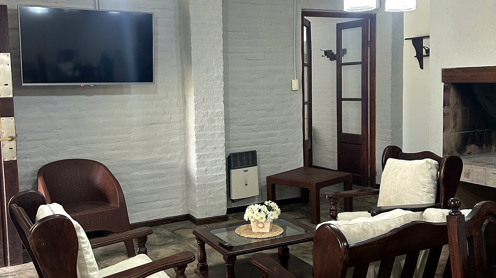
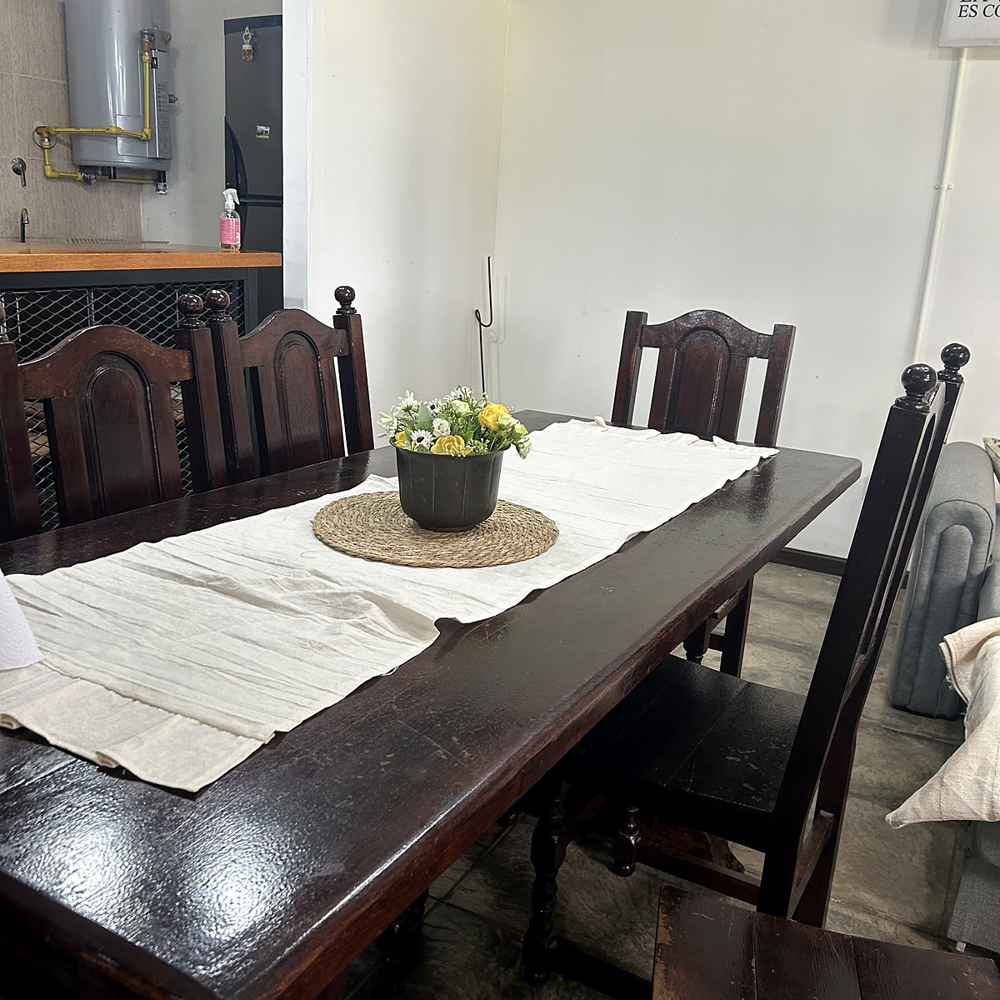
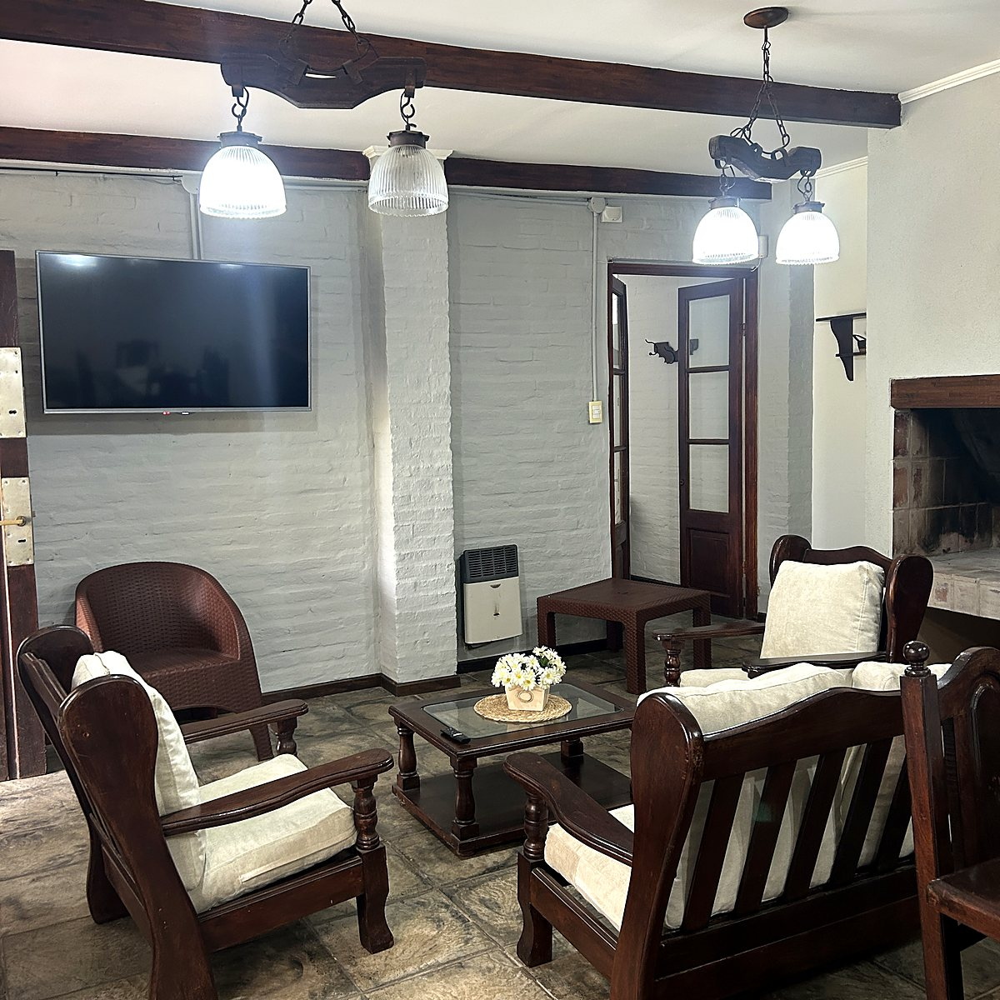
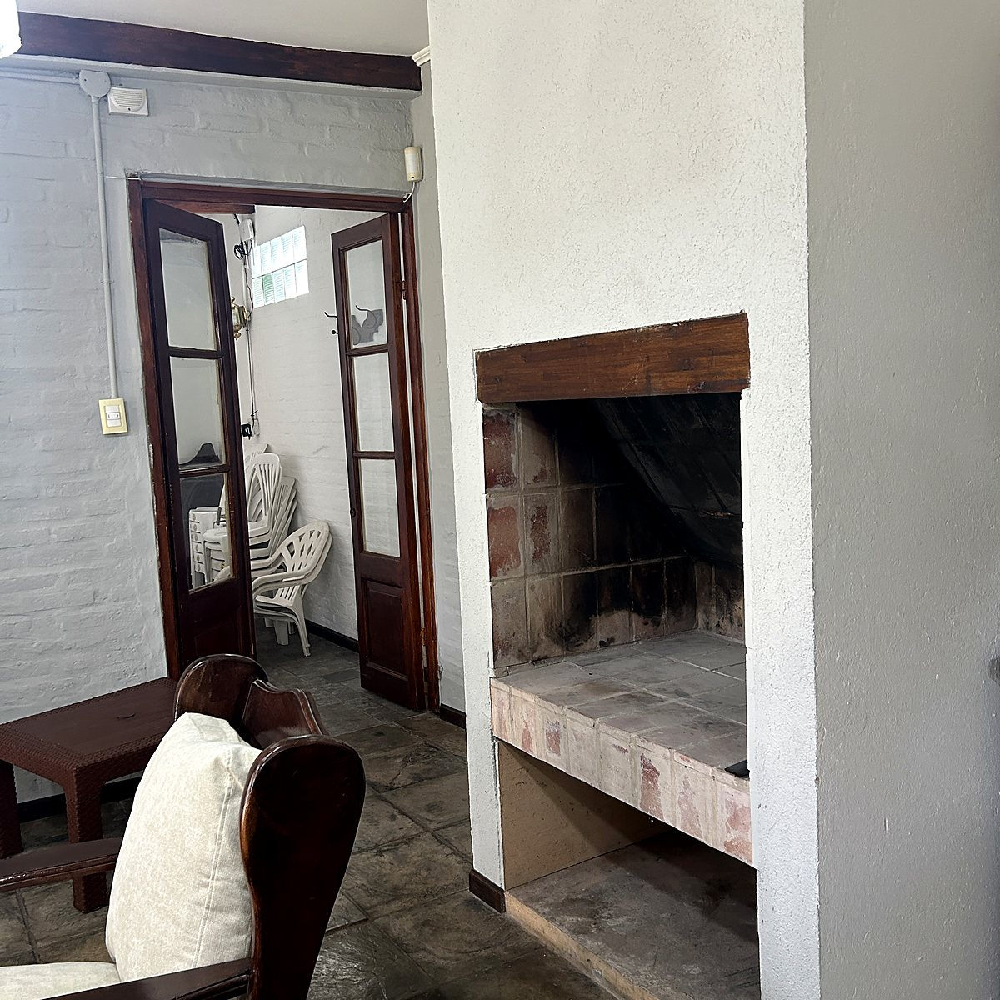
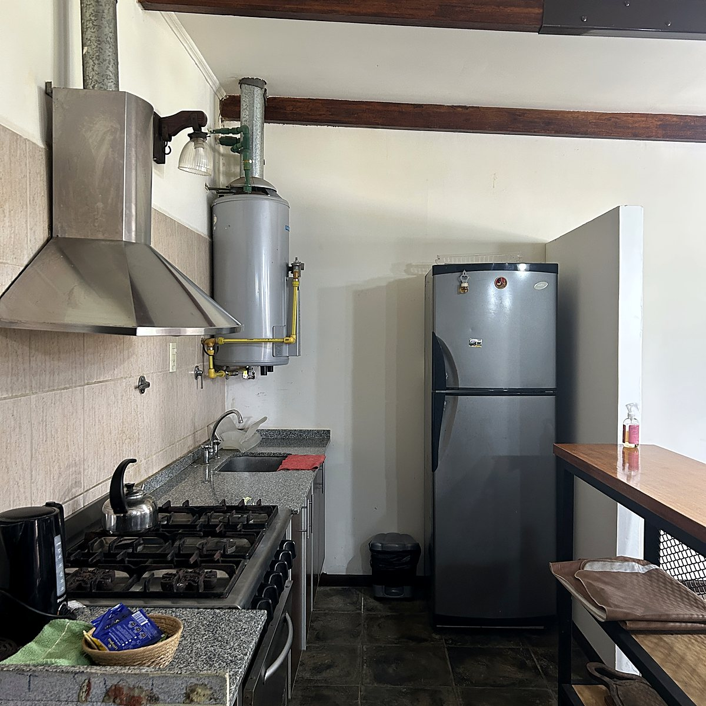
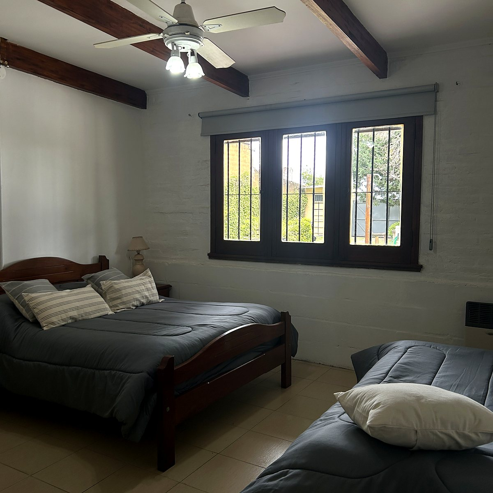
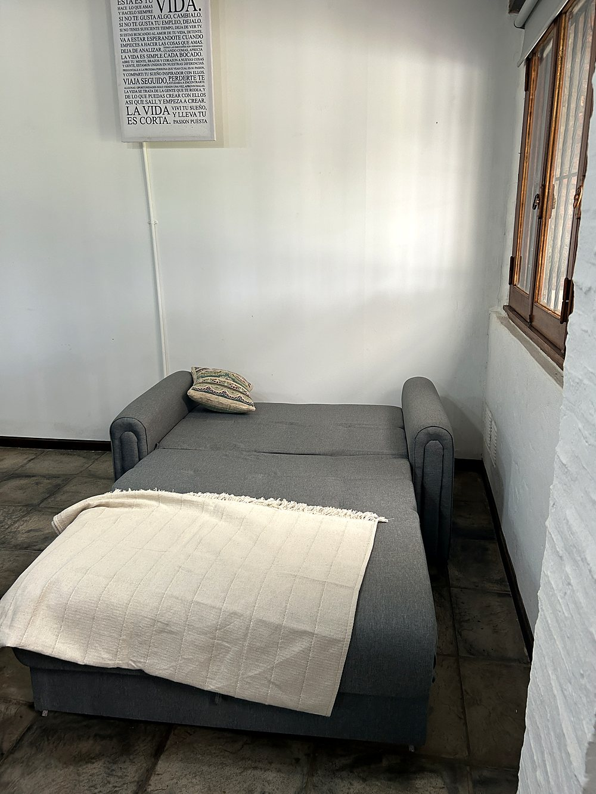
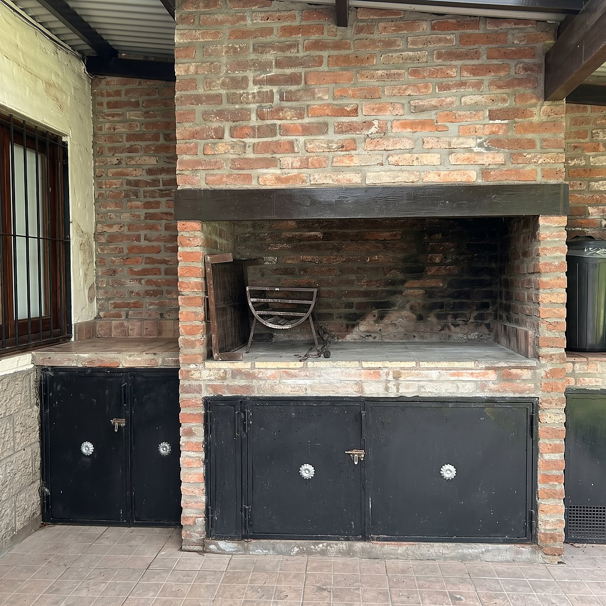

La cabaña grandede Los Álamos
Para cuatro personas, en un parque cerrado de San Pedro, a dos horas de Buenos Aires y de Rosario. Es la única de las dos con hogar a leña, horno y freezer: por diez mil pesos más que la chica, cambia bastante el invierno.
$110.000 por noche

Prendés el hogary ya está.
Consultar disponibilidadTodo lo que hace faltay nada de más.
4personas
3camas y un sofá cama
6lugares en la mesa
2 hde Buenos Aires
El comedor,con hogar.
- Hogar a leña solo en esta cabaña
- Estufa de pared a gas
- Mesa para 6
- Tres sillones
- Sofá cama
- TV digital
- Wifi



Cocina industrial,con horno.
- Cocina industrial con horno
- Heladera con freezer
- Pava eléctrica
- Pava común
- Vajilla completa
- Condimentos los traés vos



El baño.
- Baño completo
- Papel higiénico puesto
- Toallones no incluidos, traelos
- Secador de pelo no hay

Un dormitorio,cuatro lugares.
En el cuarto
- Cama matrimonial
- Cama de una plaza
- Placard
- Aire acondicionado solo acá
- Sábanas, frazadas y almohadas


Y el cuarto lugar
- Sofá cama en el comedor
- Se arma y se desarma
- Capacidad estricta cuatro personas, no más
Y afuera,el parque.
- Galería techada
- Pileta de 7,60 × 3,70 m solo en verano
- Quincho techado con parrilla
- Herramientas de asado
- Fogonero en el parque
- Mesa redonda de mosaico
- Luces en el parque
- Wifi en todo el predio
- Estacionamiento adentro
- Juegos de mesa y pelota



Todo esto es del predio y se comparte con la otra cabaña. Si tomás la quinta completa, queda solo para tu grupo.
No lo traigas.
- Sábanas
- Frazadas y almohadas
- Papel higiénico
- Vajilla completa
Acordate.
- Toallones
- Leña o carbón
- Condimentos
- Secador de pelo
La limpieza se hace antes y después de tu estadía, no durante.

Esta es la grande.
$110.000 la noche, mínimo dos noches y tres en los fines de semana largos. Se reserva con el 50% por transferencia y el resto en efectivo al llegar.